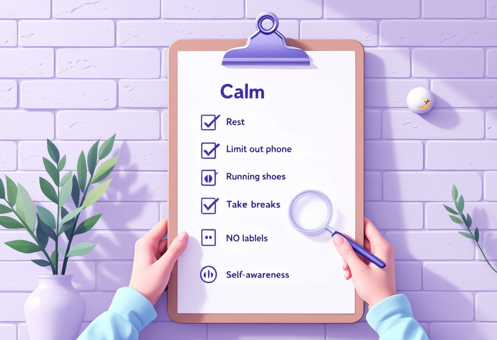

Тривожність
Як розпізнати тривогу та допомогти собі

Як проявляється тривожність
Тривога – природна реакція на стрес, невизначеність або складні життєві ситуації. Проте якщо відчуття напруги не минає, заважає навчанню, роботі, відпочинку чи спілкуванню, варто звернути на нього увагу.
Тривога може впливати не лише на емоційний стан, а й на самопочуття та поведінку.
Поширені ознаки:
- постійне або надмірне хвилювання;
- складнощі з концентрацією уваги;
- відчуття внутрішнього напруження;
- прискорене серцебиття або пітливість;
- проблеми зі сном;
- дратівливість або швидка втома;
- відчуття, що важко розслабитися.
Наявність однієї чи кількох ознак не означає автоматично наявність тривожного розладу, але може свідчити про підвищений рівень стресу.

Що може посилювати тривогу
На рівень тривожності впливають різні фактори:
- тривалий стрес;
- недосипання;
- перевтома;
- фінансові або особисті труднощі;
- невизначеність щодо майбутнього;
- надмірне споживання новин або інформації;
- деякі захворювання та фізичні стани.
Іноді тривога виникає без очевидної причини, і це також нормально.

Що можна зробити самостійно
Ці дії не замінюють професійну допомогу, але можуть допомогти знизити рівень напруги.
Подбай про базові потреби
- Намагайся регулярно спати.
- Не пропускай прийоми їжі.
- Додавай фізичну активність у свій день.
- Роби перерви під час роботи або навчання.
Зменш інформаційне навантаження
- Обмеж час у новинах та соціальних мережах.
- Уникай постійного перегляду тривожного контенту.
- Перевіряй інформацію з надійних джерел.
Поверни увагу до теперішнього моменту
Коли тривога посилюється, спробуй зосередитися на тому, що відбувається навколо тебе зараз: зверни увагу на звуки, предмети, власне дихання або фізичні відчуття.

Коли варто звернутися по допомогу
Консультація психолога або лікаря може бути корисною, якщо:
- тривога не минає протягом тривалого часу;
- через неї стає складно працювати, навчатися чи спілкуватися;
- з’являються панічні атаки;
- виникають нав’язливі думки або постійний страх;
- ти починаєш уникати звичних справ чи людей через тривогу.
Звернення по допомогу – це звичайний спосіб подбати про своє здоров’я, так само як звернення до лікаря при фізичних симптомах.

Короткий чеклист
- ✓ Висипайся та регулярно відпочивай
- ✓ Обмежуй інформаційне перевантаження
- ✓ Додавай рухову активність
- ✓ Роби паузи протягом дня
- ✓ Спостерігай за своїм станом
- ✓ Звертайся по допомогу, якщо тривога починає впливати на повсякденне життя